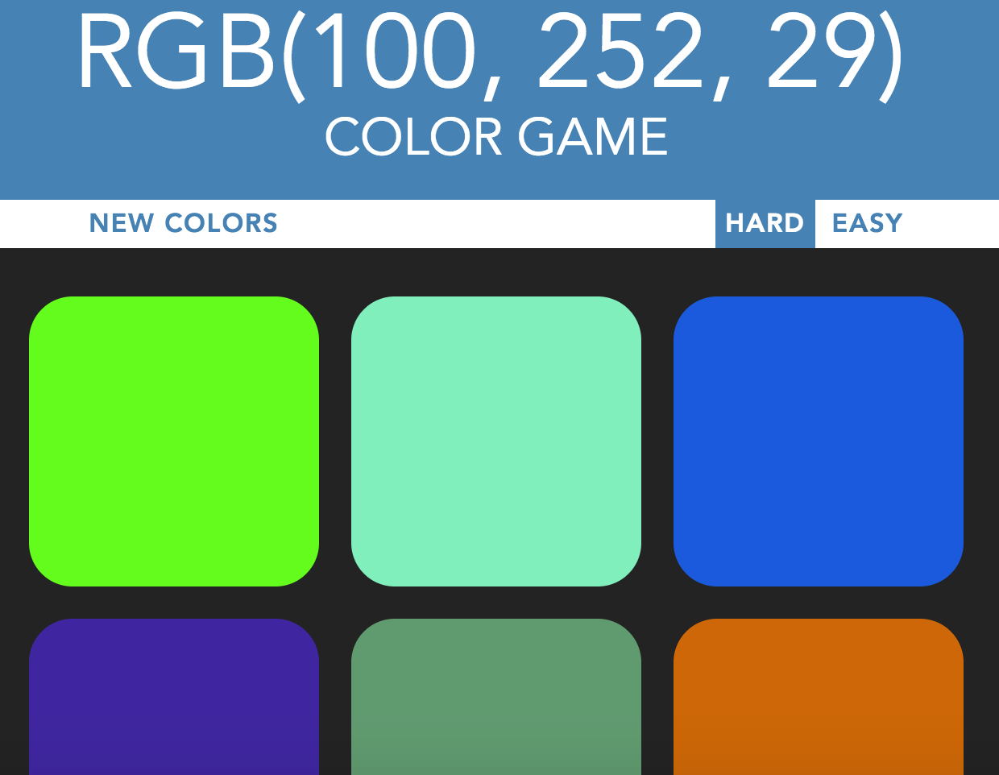
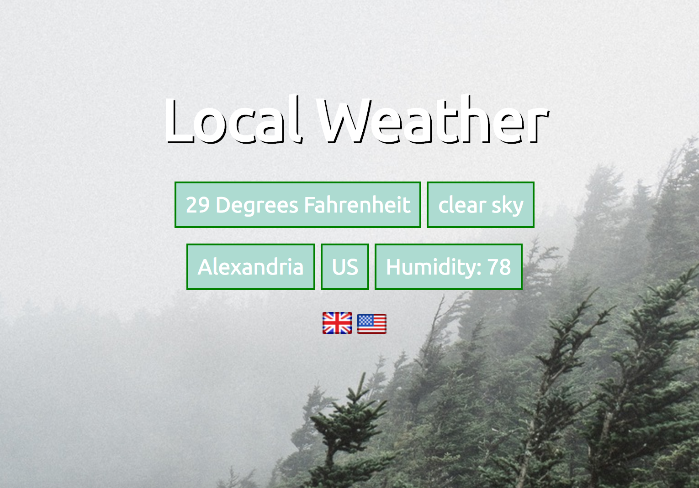
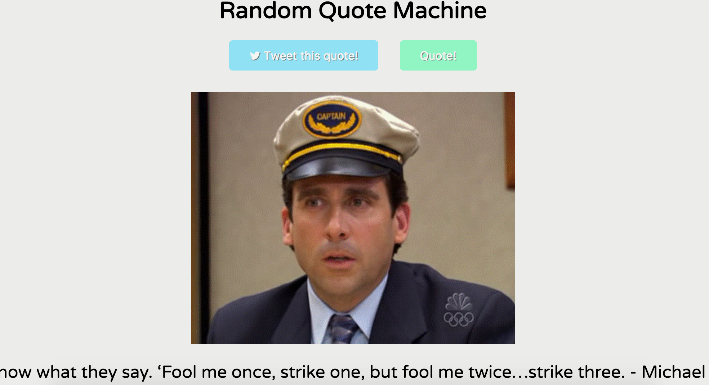
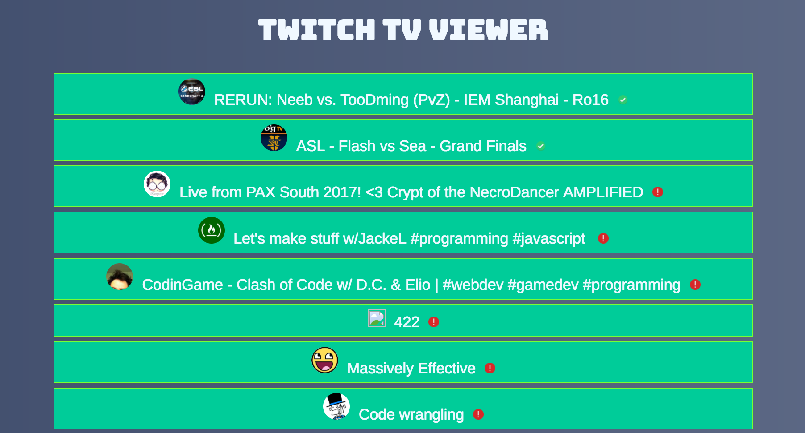
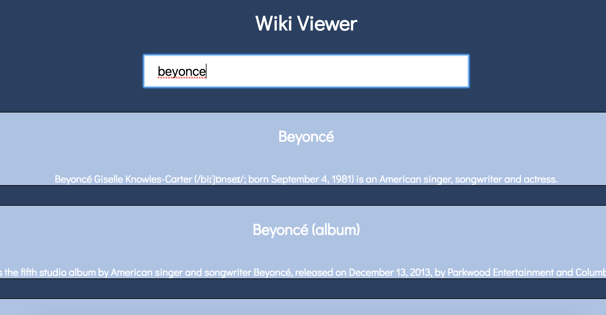

Color Picker Game
This is a game that randomizes a RGB color and presents a number of colored squares. One of those squares matches the listed RGB color exactly. It's your job to guess which one.
View!Local Weather App
This app uses the HTML5 API/Open weather API to pull location data and update the content dynamically based upon the current conditions. This app doesn't work great in Codepen as the browser API can be blocked sometimes.
View!Random Quote Machine
This tools allows you to generate a random Micheal Scott quote. It also generates a random picture. You can then share the quote on Twitter. I utilized the Twitter API to build this app.
View!Twitch TV Viwer
This is a simple app that uses the TwitchTV API to check if a list of users are online and then pull in relevent info (most recent status, updates ect).
View!Wikipedia Search Tool
This is a simple search tool that utilizes the Wikipedia API. It allows you to search for articles and click through to the content. It also allows you to go to a random article.
View!Future Project
Knausgaard cold-pressed roof party food truck, deep v scenester waistcoat enamel pin 3 wolf moon butcher. Viral vice pop-up, pabst put a bird on it art party offal. Try-hard gluten-free seitan brooklyn.
Button